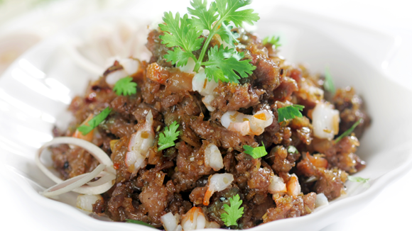

Muối sả mắm ruốc kho

- Khẩu phần 4
- Chuẩn bị 10 phút
- Thực hiện 10 phút
Nguyên liệu
- 150g phi lê bò (loại mềm)
- 5 con tép bạc
- 50g sả băm
- 1 thìa cà phê tỏi băm
- 2 thìa cà phê mắm ruốc
- 1/2 thìa cà phê muối
- 1 thìa cà phê đường
- 1/2 thìa cà phê ớt bột
- 1/3 thìa cà phê tiêu,
- 1 thìa cà phê Hạt nêm từ Thịt Thăn, Xương
Ống và Tủy - Bổ sung Vitamin A
- 3 thìa súp dầu ăn
Hướng dẫn thực hiện
- Thịt bò cắt lát, băm nhỏ, ướp 1 thìa cà phê Hạt nêm từ Thịt Thăn,
Xương Ống và Tủy - Bổ sung Vitamin A.
- Tép bạc lột vỏ, bỏ chỉ lưng, băm nhỏ, ướp ít tiêu, tỏi cho thơm
- Bắc chảo lên, cho tỏi và sả vào xào với dầu cho vàng, cho tiếp tôm và
thịt bò vào xào chín, cho đường và mắm ruốc vào xào tiếp (để lửa nhỏ, nếu
không mắm ruốc sẽ bị khét), xào đến khi tôm thịt vừa khô là được, cho ớt bột
và 1 thìa cà phê Hạt nêm từ Thịt Thăn, Xương Ống và Tủy - Bổ sung
Vitamin A. Nếm thử có vị mặn mặn, ngọt ngọt , béo béo, cay cay là ngon, tắt
lửa.
- Dọn ra đĩa, dùng với cơm nóng, kèm dĩa rau sống, dưa leo rất hấp dẫn.